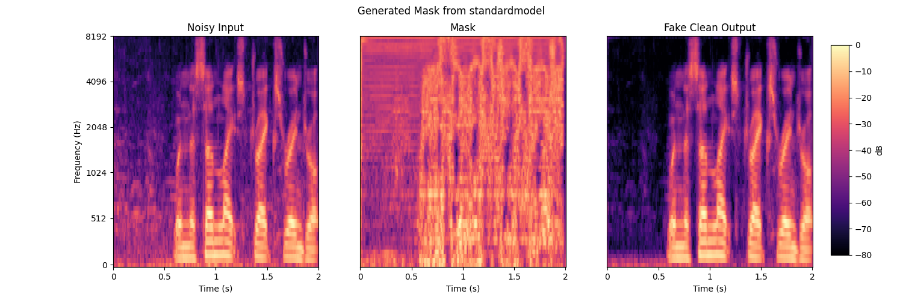
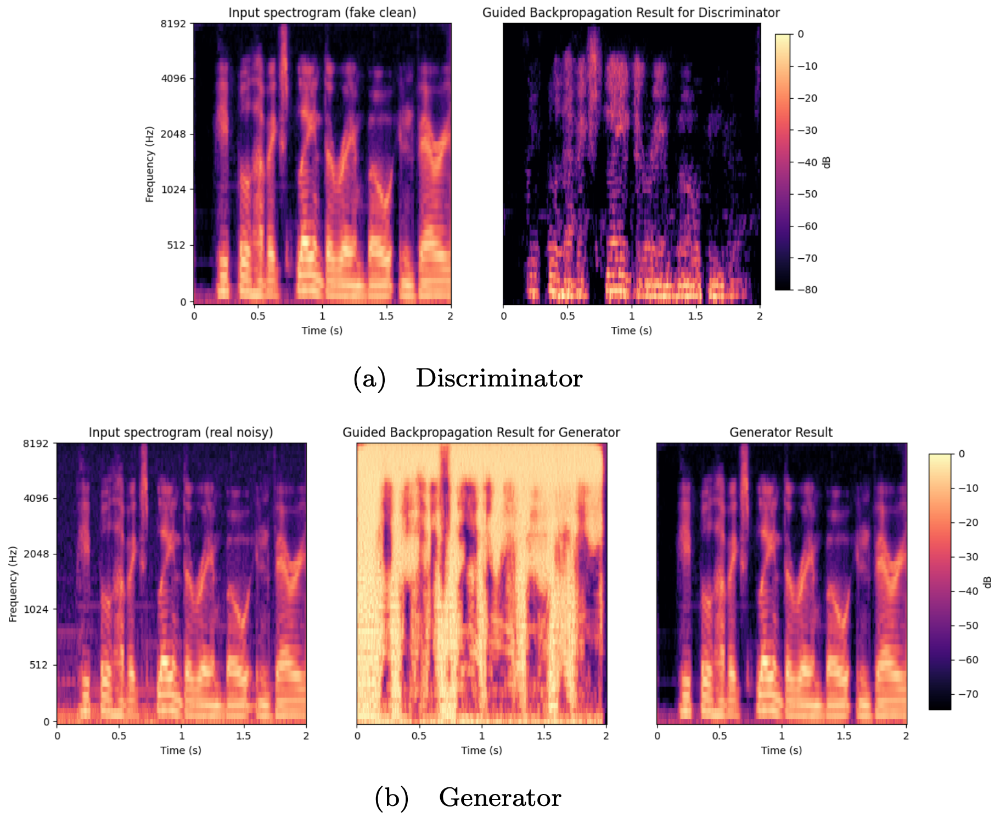
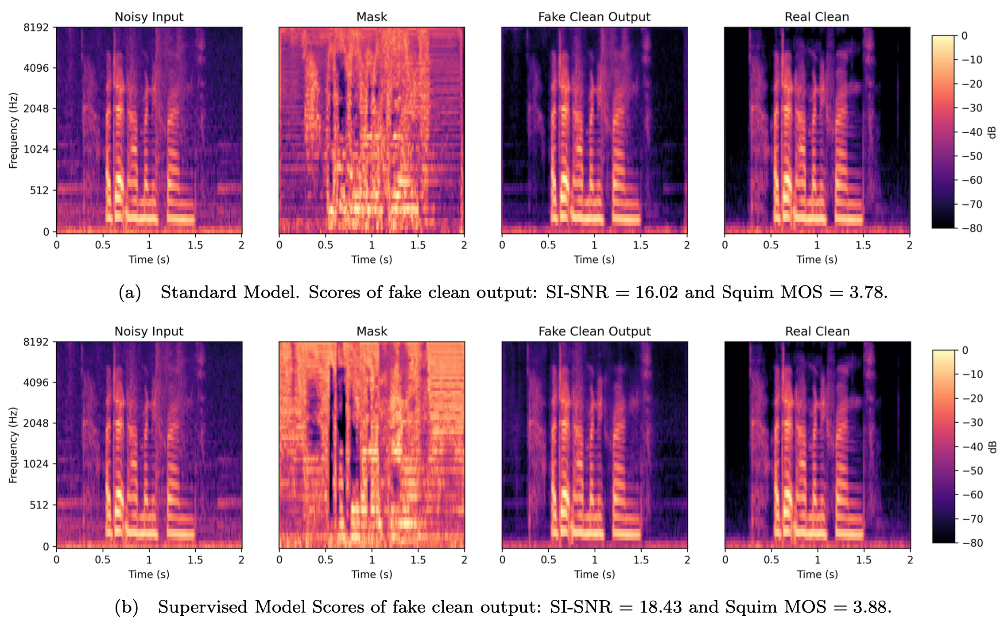

Bachelor Project - Deep Learning for Speech Enhancement - Audio Samples
Examples of speech enhancement on VCTKD by our models
Noisy
p232_035
p257_290
p232_295
p257_295
p232_283
Standard Model
p232_035
p257_290
p232_295
p257_295
p232_283
Supervised Model
p232_035
p257_290
p232_295
p257_295
p232_283
Real Clean
p232_035
p257_290
p232_295
p257_295
p232_283
Report Supplement 1
Spectrogram of the generated mask (middle) produced by the standard
model, compared to the original noisy input (left) and the output of the generator
(right). The output is the result of an element-wise multiplication of the noisy
input and the generated mask.

Noisy
Generated Fake Clean
Real Clean
Report Supplement 2
Guided backpropagation for the discriminator (a) and the generator
(b).

Noisy
Generated Fake Clean
Real Clean
Report Supplement 3
Comparison between generated spectrograms of the standard model
(top) and the supervised model (bottom). For each model, we display the noisy
input, the generated mask, the outputted Hadamard product between the input
and the mask, and the real clean spectrogram.
